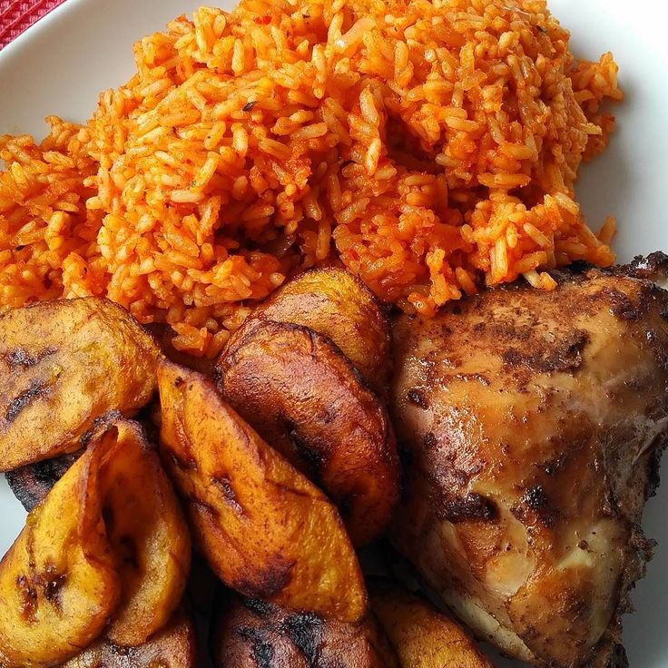

Jollof Rice

Description
This is a Nigerian food popularly known as jollof rice
ingredients
- Rice: This is the first essential ingredient for making jollof rice
- Pepper mix: The second mostimportant ingredient is the pepper mix. This could include red bell pepper(tatashe), scotch bonnet pepper(ata rodo), tomatoes, onions, garlic, ginger.
- Tomato paste: This is what gives the jollof rice that rich colour associated with it and that unique taste that makes the rice taste sour or acidic.
- Cooking oil: This is also a very ingral parts of the required ingredients or making jollof rice.
- Meat or/ and fish: This is an essential ingredient as well.
- Seasoning cubes(popularly called Maggi): This can be added according to the preference of the chef.
- Salt, curry, thyme, meat or chicken stock: a very important ingredient.
Steps
- Precook the rice and let it seat.
- Grill or fry the meat and/ or fish and set aside.
- Prepare a small amount of sauce by incorporating the tomatoes and peppers. Boil them together and simmer for a few minutes to dry out extra liquid.
- Place a pot over a medium heat and put some oil. Put the chopped onion and fry until it attains the translucent factor. Add in your premade tomato sauce, let it simmer for about 10 minutes and add tomato paste, then scoop about a quarter of it and set aside.
- Add the chicken or meat stock into the pot and boil in high heat from 5 to 10 minutes. Add curry, thyme, broth cube and salt, and then boil again for about 5 minutes.
- Add the rice and mix well, making sure that the liquid in the pot should be the same amount (or level) as the rice. Feel free to add more water if the chicken stock is not enough.
- Cover the pot with lid and let the rice cook over medium flame. If you opt to use bay leaves, drop it before covering the pot.
- When the liquid in the rice has almost dried up, pour the extra stew you kept and ground crayfish at the top of the rice. Do not mix the rice yet but cover the pot again, letting it simmer until it completely dries up this time. When you see that there’s no liquid already, mix the rice thoroughly and voila! Your party jollof rice is all ready to be served.